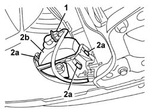
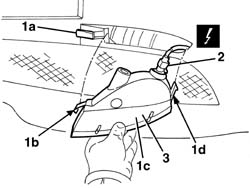

5550C30 l/h or r/h front turn signal (one) - r+r
- Path
- Procedures > 55 ELECTRICAL EQUIPMENT > 5550 MANOEUVRING AND WARNING SIGNALS > 5550C turn signal/hazard warning lights > 5550C30 l/h or r/h front turn signal (one) - r+r
- Kind
- repair procedure (removal / refitting; the operation number is the code)
- Applies to
- all engines; all production periods
- Interactive page
- https://sloeber94.github.io/elrnDB-a147/en/#/3025578
Applies to: all engines; all production periods
 Removing
Removing
 Refitting
Refitting7055B54 under-engine guard - r r
1. Disconnect the electrical connection.
 | Name | Connector |
|---|---|---|
1 | Left front direction indicator |
| Name | Connector |
|---|---|---|
1 | Right front direction indicator |
2. Release the retainers (2a) and remove the direction indicator (2b), extracting it from the front of the vehicle.

Applies to: all engines; all production periods
Refitting
RemovingCheck that the direction indicator is not damaged and that the bulb is working properly.
Position the turn signal and engage the retainers.
Connect the electrical connection.
Check the operation of the direction indicator.
Applies to: all engines; all production periods; only with equipment: GTA
Removing
Refitting1. Insert a screwdriver in the housing (1a) and release the tab (1b), then extract the front direction indicator (1c) gently, releasing it from the retainer (1d).
2. Disconnect the electrical connection.
| Name | Connector |
|---|---|---|
2 | Left front direction indicator |
| Name | Connector |
|---|---|---|
2 | Right front direction indicator |
3. Keep the front direction indicator.

Applies to: all engines; all production periods; only with equipment: GTA
Refitting
RemovingCheck that the direction indicator is not damaged and that the bulb is working properly.
Connect the electrical connection.
Fit the direction indicator in position engaging the retainer and the tab.
Check the operation of the direction indicator.
Topics linked from this page (3)
- 7055B54 under-engine guard - r r
- F18 Left front direction indicator
- F19 Right front direction indicator